Σύντομη παρουσίαση του μουσείου · 39″
Το έργο
Το μουσείο φέρνει την Κνωσό στην οθόνη: ένα δωμάτιο με τις γνωστότερες τοιχογραφίες του ανακτόρου και μια συλλογή αγγείων από όλες τις φάσεις του μινωικού πολιτισμού. Κάθε έκθεμα συνοδεύεται από πληροφορίες για τη χρονολόγηση, τον τόπο εύρεσης και την ερμηνεία του, γραμμένες για μαθητές και ευρύ κοινό.
Σχεδιάστηκε ως εκπαιδευτικό εργαλείο που μπορεί να χρησιμοποιηθεί στην τάξη, πριν ή μετά από μια επίσκεψη σε μουσείο, ή από σχολεία που δεν μπορούν να ταξιδέψουν στην Κρήτη.
Τι κάνει ο επισκέπτης
Περιηγείται ελεύθερα
Κινείται στις αίθουσες σε πρώτο ή τρίτο πρόσωπο, ως μια εξερευνήτρια-αρχαιολόγος, και πλησιάζει όποιο έκθεμα θέλει.
Ακολουθεί ξενάγηση
Μια αυτόματη ξενάγηση τον φέρνει μπροστά σε κάθε τοιχογραφία και ανοίγει την κάρτα πληροφοριών της.
Εξετάζει τα αγγεία
Βλέπει κάθε αγγείο από κοντά σε περιστρεφόμενη βάση, το γυρίζει και κάνει ζουμ στη διακόσμηση.
Βρίσκει κρυμμένα σύμβολα
Μαζεύει επτά σύμβολα, από τον διπλό πέλεκυ ως τον Δίσκο της Φαιστού, και μαθαίνει τι σήμαιναν.
Ανοίγει τον χάρτη
Ένας διαδραστικός χάρτης της Κρήτης δείχνει Κνωσό, Φαιστό, Μάλια, Ζάκρο, Παλαίκαστρο και το Σπήλαιο των Καμαρών.
Ελέγχει τι έμαθε
Ένα κουίζ 12 ερωτήσεων με εξήγηση σε κάθε απάντηση κλείνει την επίσκεψη.
Μέσα στο μουσείο
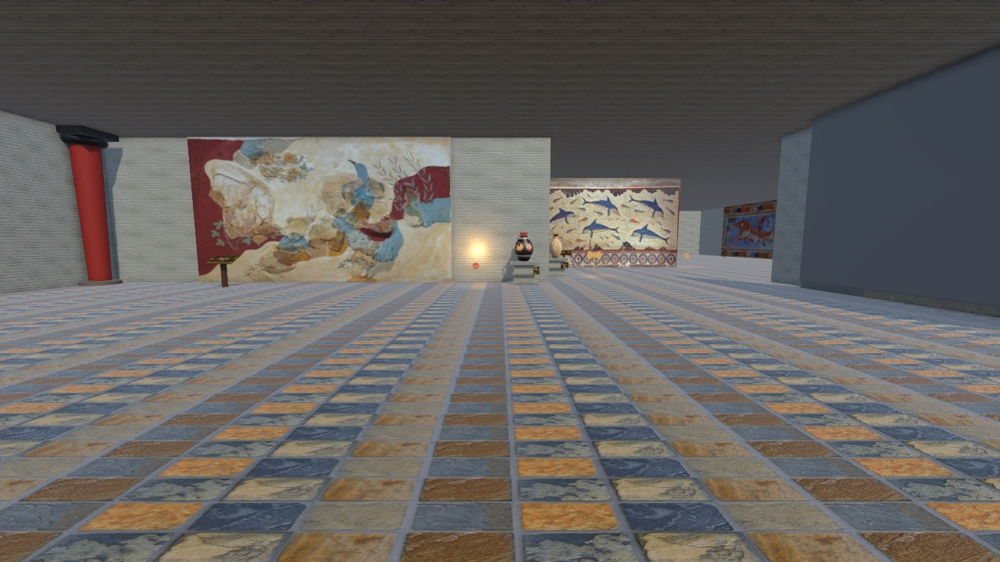

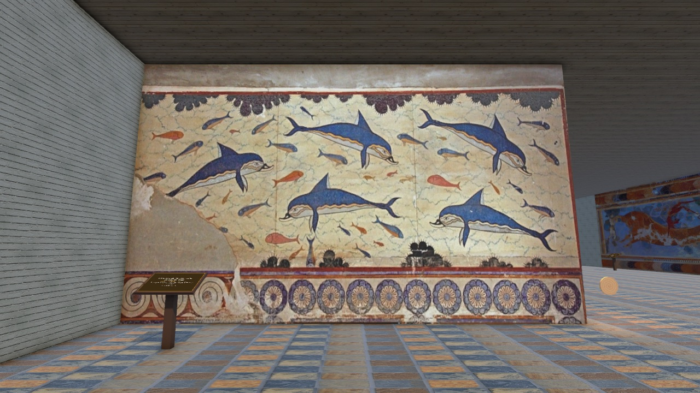
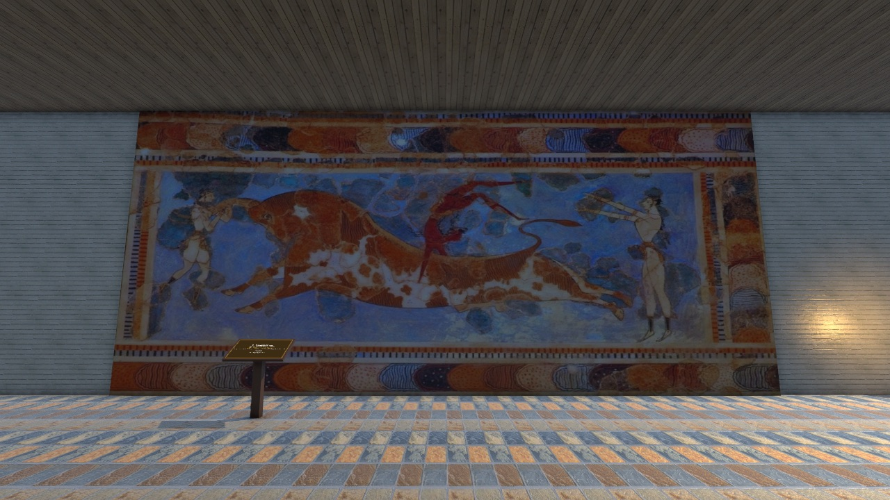
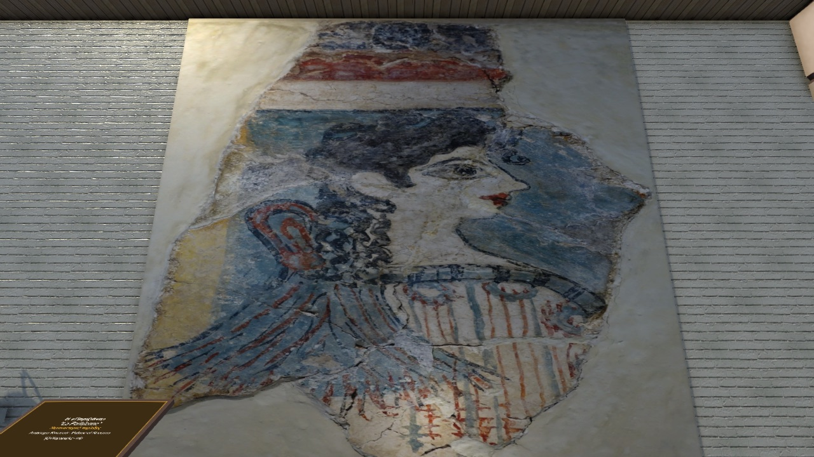
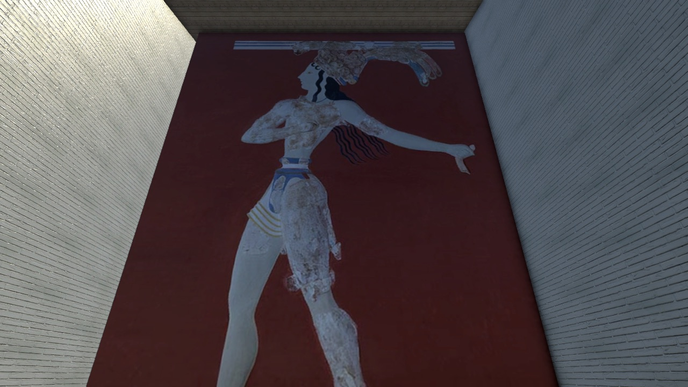
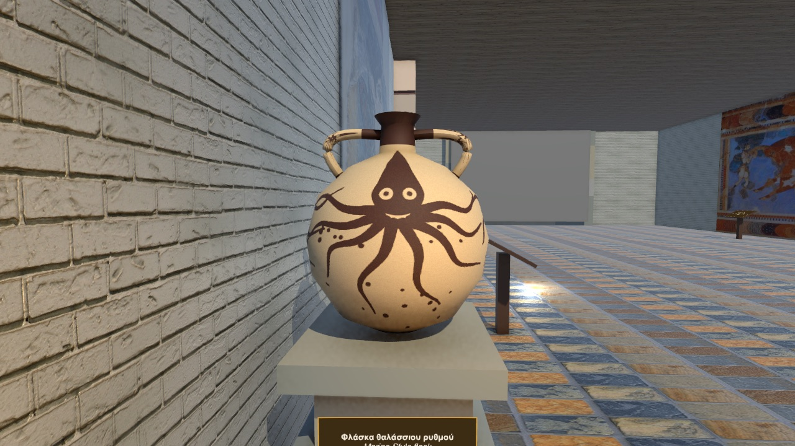
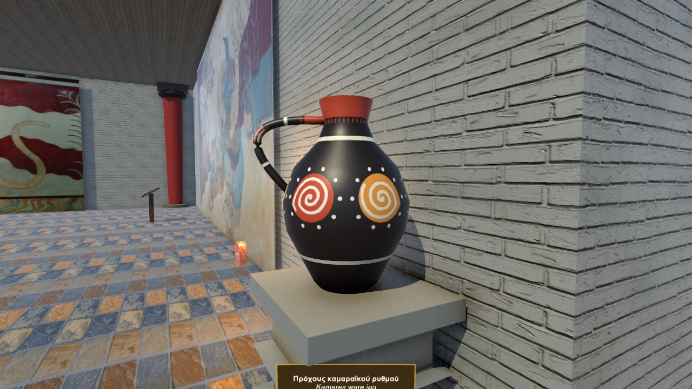
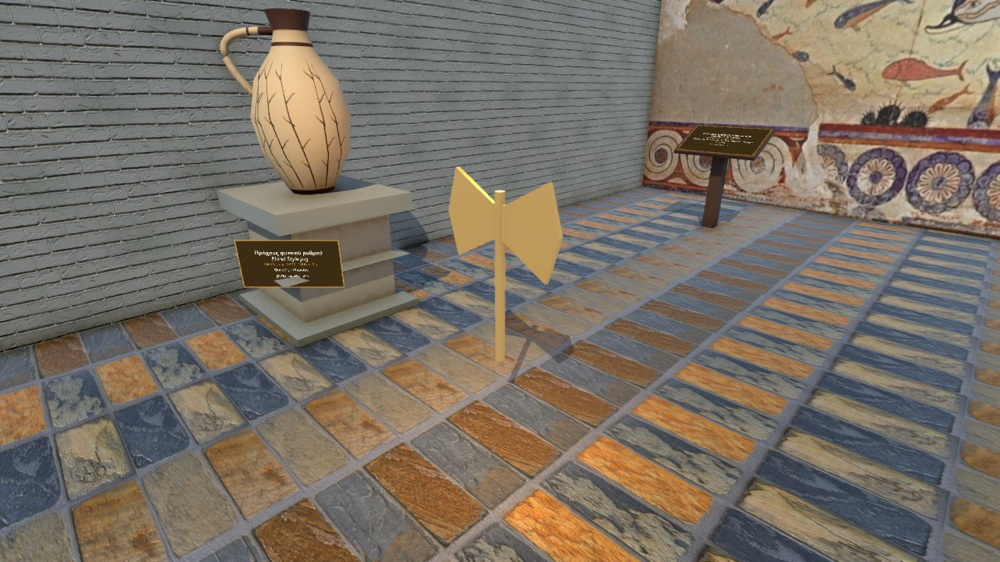
Χρονολόγιο
Κάθε έκθεμα τοποθετείται σε μία από τις τέσσερις περιόδους του μινωικού πολιτισμού, ώστε ο επισκέπτης να βλέπει πού ανήκει στον χρόνο.
Τα εκθέματα
- Οι Γρύπες της Αίθουσας του Θρόνου · τοιχογραφία
- Πίθηκοι και Πουλιά · τοιχογραφία
- Η Τοιχογραφία των Δελφινιών · τοιχογραφία
- Τα Ταυροκαθάψια · τοιχογραφία
- Η «Παριζιάνα» · τοιχογραφία
- Ο Πρίγκιπας με τα Κρίνα · τοιχογραφία
- Οι Γαλάζιες Κυρίες · τοιχογραφία
- Πίθος · αγγείο
- Πρόχους καμαραϊκού ρυθμού · αγγείο
- Φλάσκα θαλάσσιου ρυθμού · αγγείο
- Πρόχους φυτικού ρυθμού · αγγείο
- Αμφορέας ανακτορικού ρυθμού · αγγείο
- Κωνικό ρυτό · αγγείο
- Ψευδόστομος αμφορέας · αγγείο
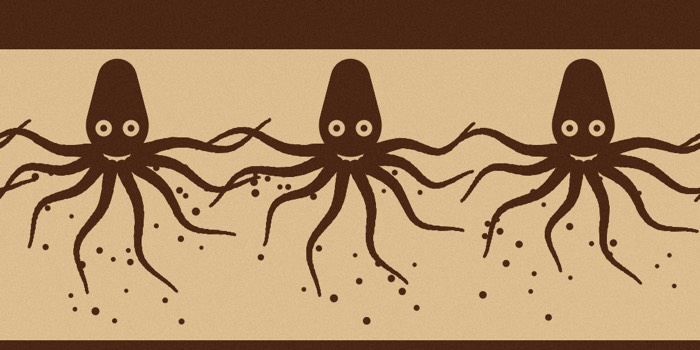
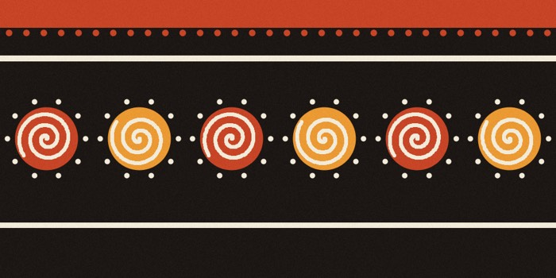
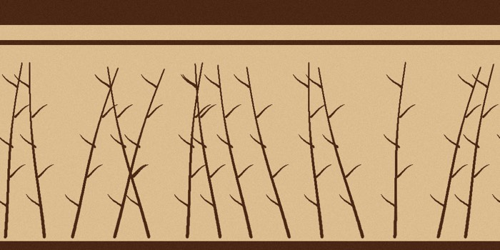
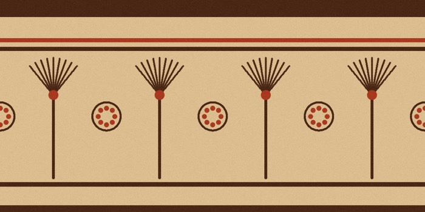
Οι διακοσμήσεις των αγγείων σχεδιάστηκαν για το μουσείο, με βάση τους ρυθμούς της μινωικής κεραμικής.
Ο ρόλος μου
Έκανα το έργο από την αρχή ως το τέλος:
- Επιλογή εκθεμάτων και αρχαιολογική τεκμηρίωση
- Συγγραφή κειμένων σε ελληνικά και αγγλικά
- Σχεδιασμός της εμπειρίας: ξενάγηση, κουίζ, σύμβολα, χάρτης
- Ανάπτυξη σε Unity/C#, και αναβάθμιση το 2026 με νέα στοιχεία (χαρακτήρας, κρυμμένα σύμβολα)